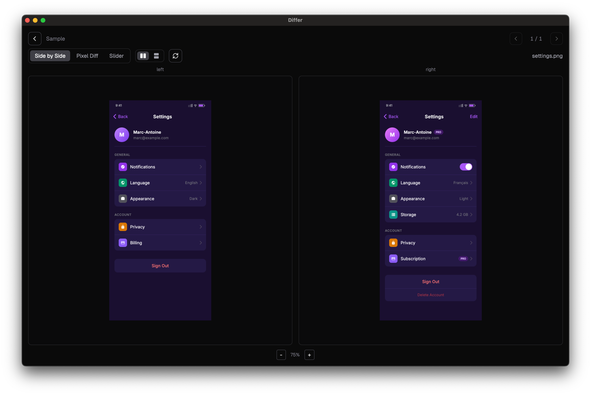

Pick two folders, auto-match images by filename, and compare them instantly. Side-by-side, pixel diff, or slider overlay.

Synchronized scroll and zoom. Toggle between horizontal and vertical layout.
pixelmatch-powered overlay highlighting every changed pixel with a diff percentage.
Drag to reveal. Instant visual comparison of before and after.